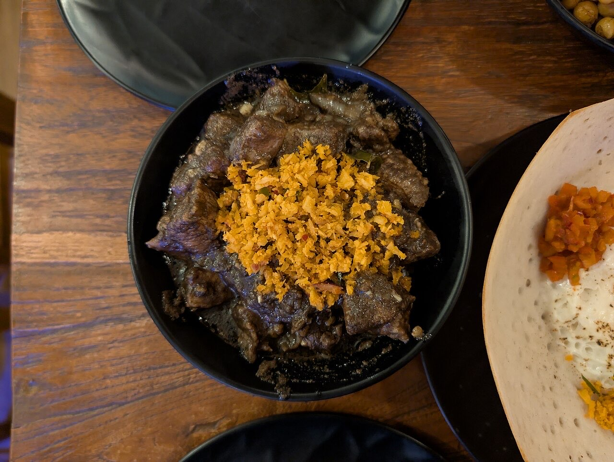
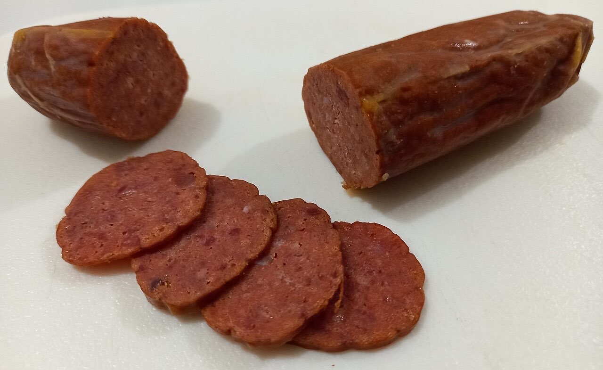

Fotografias ilustrativas — no site final usamos as vossas.
Taberna / restaurante · Centro histórico
Petiscos e vinho no Largo do Trovador
Leia o QR na mesa e peça do telemóvel, sem esperar.
Moelas, bochechas de porco estufadas e vinhos de pequenos produtores.
Esplanada no largo; reserve por WhatsApp ou telefone.
A Taberna Trovador fica no Largo do Trovador, no centro histórico de Guimarães, Património Mundial. Petiscos para partilhar e vinhos de pequenos produtores, com esplanada.


Fotografias ilustrativas — no site final usamos as vossas.
Novo · Pedidos por QR code
Menos espera nas horas de ponta, menos enganos nos pedidos e a equipa livre para servir.
Pedido de reserva
Escolha o dia e a hora — o pedido chega por WhatsApp e confirmamos logo.
↑ Assim chegaria a mensagem ao vosso WhatsApp. (Nesta demonstração nada é enviado.)
Onde estamos
| Seg–Qui | 12:00–15:00 · 19:00–22:00 |
|---|---|
| Sex–Sáb | 12:00–15:00 · 19:00–22:30 |
| Dom | Encerrado |
Proposta para Taberna Trovador
Esta página foi feita de propósito para Taberna Trovador por João Machado, programador web aqui de Guimarães. Inclui:
Eu trato do alojamento e da manutenção. Sem compromisso.